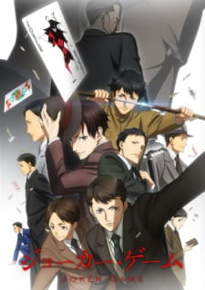

1 / 5

Jujutsu Kaisen
2 / 5

Joker Game
3 / 5

Balance: Unlimited
4 / 5
Moriarty the Patriot
5 / 5
The King's Avatar
The first season of Jujutsu Kaisen recently finished and the ending was amazing in my opinion. JJK is good mix of comedy, action, and supernatural and the main characters each have their unique personality that makes you love them, the excpetion being Mahito. I would definitely recommend this to a first time anime watcher because of its easy to follow plotline.
Joker Game is set in the era with World War II about to start and having information about other countries is super important. The story is about the spies of the newly established "D-Agency" in Japan and their missions that they were sent to accomplish. It only has one season with 12 episodes but its such a good anime. Its genre would fall in historical, military, and drama. It has a few comedic moments but not many.
Balance:Unlimited was new anime of 2020-2021 and follows a detective and his new rich partner to solve the mystery behind the rich partner's mother's death. The rich partner, Kambe Daisuke has an unlimited balance hence the name of the anime, and doesn't follow the convential ways of the main character (the detective), which is where the comedy comes in. This is another anime I'd suggest to someone looking for a light yet mystery anime.
This anime is about James Moriarty from Arthur Conan Doyle's Sherlock. This story is mostly about Moriarty and his brothers/team and how James Moriarty strings along Sherlock Holmes to follow crimes and expose the nobles. It has recently started season 2, so far there is only one episode of season 2 and 11 episodes of season 1.
The King's Avatar is a chinese anime but its my absolute favorite. It has 2 seasons and a live adaptation which is really good. This story is about E-gamers playing a game called Glory. The main character is called a God by other players in the game and this anime is about how he makes his own team from scratch after he was forced to retire from his original team. The live adaptation was surprisingly really good and is filled with comedy as the main character is a laid-back and easy-going guy and likes making wise-cracks. If you like e-games then I'd suggest watching this anime.